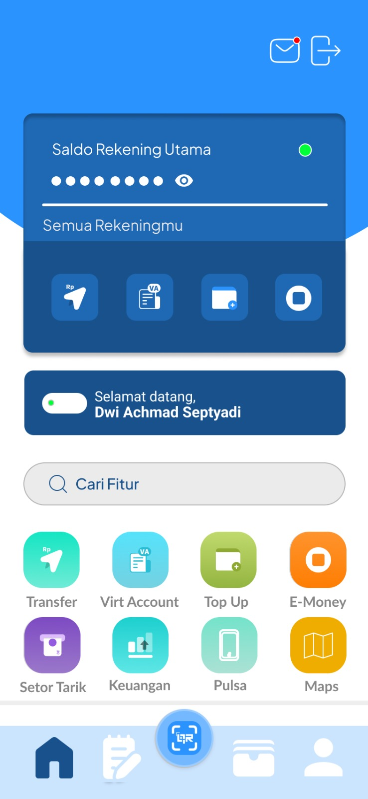

Folder · Proyek
Proyek


Llyonne Store
Website top-up game otomatis: bayar, lalu item terkirim sendiri ke akun game.
Lihat detail

AI Academic Advisor
Asisten akademik untuk menyusun KRS, memilih peminatan, dan memeriksa kelayakan Tugas Akhir.
Lihat detail

Tabunganku
Konsep aplikasi mobile banking yang terhubung dengan banyak kampus.
Lihat detail


J-Cafe
Desain aplikasi pemesanan menu kafe, dari katalog sampai struk.
Lihat detail